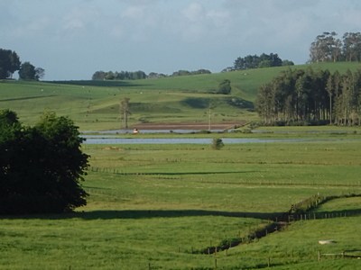
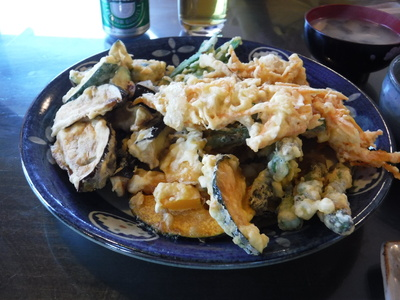
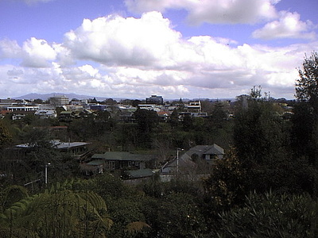
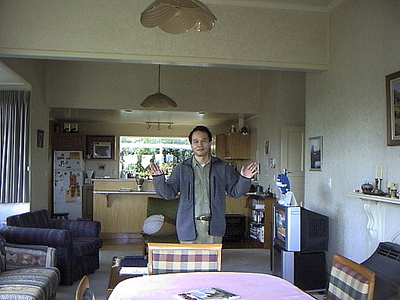
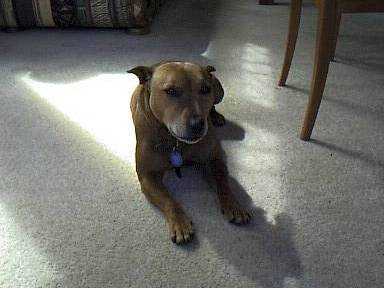
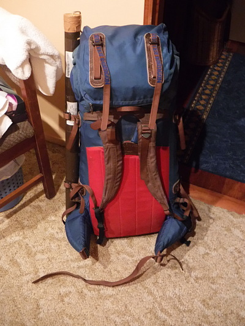

釣行日誌 ＮＺ編 「一期一会の旅：A Sentimental Journey」
転戦、転戦、そして不戦敗
12/04(TUE)
今日はハミルトン滞在の最終日。朝食をいただいてから荷物の片付けを始める。最終ラウンドに挑みたかったが、今朝も天気が良くなさそうだったので、釣り具以外をパッキングし、田島さんと談笑する。
牧場での早朝からの仕事を終え、奥さんが帰ってみえた。一緒に昼食をいただき、またしても濡れたウェーディングシューズ一式を積み込んで、南麓の川へもう一度出撃する。
30分ほどのドライブで例の若い牧場主の青年の家に着き、今日も牧場入り口脇に車を停めて身支度を始める。ところが遠くの山頂を見ると、何となく怪しげな雲がかかっている。
『こりゃ、今日も危ないかな....』
５分ほど車窓から様子をうかがってみるが、どうも不安である。一昨日の恐怖はもう懲り懲りだったので、比較的空の明るい感じがする北麓の川へ転進することにして車を出す。
グーグルマップのプリントアウトと 1/50,000 地形図を頼りに、例のアメリカ人アングラーと出会った駐車場では無く、下流側から川に近づくルートを選び、標識を見ながら急ぐ。
いざ、この間の入渓点の橋の上まで来て、川面を一瞥すると、一面の濁流！ 一昨日からかなりの降雨量があったらしい。流量もさることながら濁りがひどい。これでは手が出ない。
『これではしょうがない。仕方ないが、南のスプリングクリークへ行こう！』
午後２時を回っていた。今日は早めに帰りたかったのであまり時間は無い。車を急転回し、砂利道から舗装道へ出て、今来た道を引き返す。国道に出て南へ下り、小さな町をいくつか通り抜け、偉大なるワイカト川を堰き止めたダムの上を通り、また町を過ぎ、ようやく別の国道へと出た。
先日、パジャマ姿で出てきてくれた奥さんの農家を過ぎ、国道の橋の手前を左に曲がる。川沿いに進んで行くと、この道も舗装されている。
このスプリングクリークの上流には、小さな木橋の下にちょっとした曲がりのポイントがあって、昔はいつも大物が居着いていたものだ。時間が足りなくて竿を出すことが出来なくても、せめて木橋の上から悠々と泳ぐレインボーの姿を見てみたいと切に願いつつ車を飛ばす。
どん詰まりの農家まで来ると、その先の道路はさすがにまだ舗装されておらず、あまり整備もされていないようでデコボコが激しい。
『こりゃ乗用車では無理だな...』
昔は砂利道だったが、当時乗っていた日産のパルサーでも楽に入れたものだったが、これはここから歩くしかないか....と、ひょいと流れを見ると何と言うことか！ ここも大増水の濁流である。
「うわ！ このスプリングクリークでこんなに濁ったのか！」
本当に残念だったが、仕方がない。天気には勝てない。後ろ髪を引かれる思いでカローラの向きを変え、農道をすごすごと引き返す。午後４時半を回っていた。
田島家に着いて使わずじまいに終わった釣り具一式をトランクから出し、他の小物や地図も部屋に入れて荷造りを済ませる。まだ濡れているウェーディングシューズは泥だけ落として防水スタッフバッグに入れ、バックパックの最下段に詰めた。
荷造りが一段落したので、ベランダに出て遠くの牧草地を眺めると、低いところが一面水没している。

あんなに雨が降ったんだなぁ....。天気の運はどうやら南島で使い果たしてしまったらしい。家の隣の囲いの中で、田島さんの飼い牛が静かに草を食んでいた。
最後の夜のごちそうは、なんと奥さんが天ぷらを作ってくださった。

今夜でお別れ。明朝は未明３時に出発するので、夫妻がハイネケンの缶ビールで乾杯してくれた。おつまみのチーズが美味しかった。カボチャ、にんじんのかき揚げ、ナス、エビなど、どれも素晴らしい味に感動しつつ大皿一杯平らげてしまった。
夕食後、田島さんにパソコンを使わせていただいて友人にメールを打ち、明日帰国の旨を伝える。トロイ・メージャーさんにお礼の電話をかけ、丁重にお礼を述べる。その後、しばらく釣行のメモなどをまとめていると携帯が鳴った。出てみると、ジョー・マッケンジー夫人からである。この釣行日誌には、ジョーさんという女性が２人も出てくるのだが、こちらのジョーさんは、僕がハミルトンで、ヘザーさん宅の次にホームステイした家のホストマザーなのである。ヘザーさんから電話番号を教えてもらって昨夜掛けてみたのだが繋がらず、留守電にメッセージを残したら、今夜掛けてきてくれたのだった。
「ハイ！ジョー！お元気でしたか？」
「ハイ、ゴウ！久しぶりねぇ！あなたのことはよく覚えているわよ。子供たちも大きくなって、私もう３人も孫がいるのよ！」
快活に笑う声は昔のままでとても懐かしかった。なんと17年ぶりの会話である。当時ジョーさんはワイカト川沿いの高台に建つ、見晴らしの良い大きな古い屋敷に住んでおり、僕はそこへヘザーさんからの紹介で移り住んだのだ。



その家にはハイ・ティーンだった２人の息子さんとお嬢さん、犬のジェシー、そしてワーキングホリデーで滞在していた日本人カップルのノボル君たちが住んでおり、賑やかに暮らしたものだった。ノボル君と出会ってからは良い釣り友達となり、近郊の川を釣り歩いたものである。
ジョーさんは今はオークランドに引っ越したそうで、あの大きな屋敷を今でも懐かしく思い出しますよ、と告げると
「あの家は素晴らしかったわねぇ。ちょっとあちこちガタが来てたけど。」
と笑っていた。
「フェイスブックをやってるから、日本に帰ったら探してね。Keep in touch! 」
と、教えてくれて電話は終わった。
田島さん夫妻に挨拶とお礼を述べ、お借りしていた合鍵を返す。薬を飲んでから部屋に戻り、最後の荷造りをする。パスポート、国外免許、財布など、明朝は早いので忘れ物の無いようしっかりとチェックを済ませ、早めにベッドに入った。

釣行日誌ＮＺ編 目次へ
サイトマップ
ホームへ
お問い合わせ